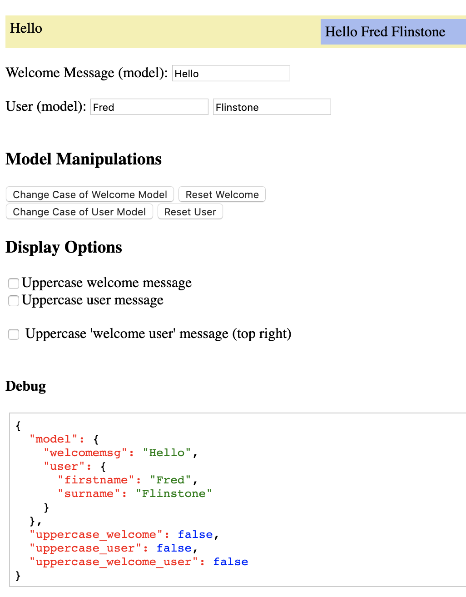

Here are various working examples of the same GUI implemented using various techniques/frameworks:
| Technique | Example | Lines of Code | Comments |
|---|---|---|---|
| Object Oriented | OO | 292 | Object Oriented Models with Observer Pattern (using Event Listeners). MVA architecture with mediating adapters between model and view. |
| MVCA "Model View Controller App" - architecture | MVCA | 383 | Another OO version using the MVCA "Model View Controller App" approach.
Its a clearer, more organised implementation, despite a few extra lines of code. 😉 |
| Entity Component System | ECS | 261 | Entity Component System.
Can we really use a "gaming" architecture to build a traditional simple GUI? Yes we can! And its a refreshing way of doing things vs MVC. |
| Plain Javascript | Plain | 154 | Simple plain JQuery approach. Could even remove the Jquery and use plain javascript -- the point is, no fancy framework. |
| Vue.js | Vue | 58 | Clearly the winner in terms of conciseness |
The GUI is the same for all demos, just the underlying implementation changes.
Source code to all the examples on Github. A couple of wxPython 🐍 implementations here too!
My Medium Article Part I - Implementing Object Oriented MVC in Javascript vs. Vue.js (editing)
My Medium Article Part II - Is the Entity Component System any good for building traditional GUIs? (editing)
Doco on the jecs javascript ECS library
GitUML my biggest Javascript (and Python) project to date, with a complex GUI, which I am refactoring using the techniques in this article. GitUML lets you visualise your Github source code as UML via point and click, and have UML diagrams update automatically as you check in code.
More about me, my MVC design patterns and other articles.